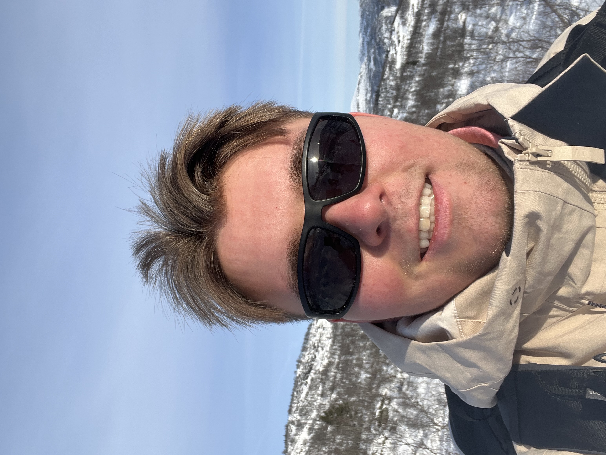
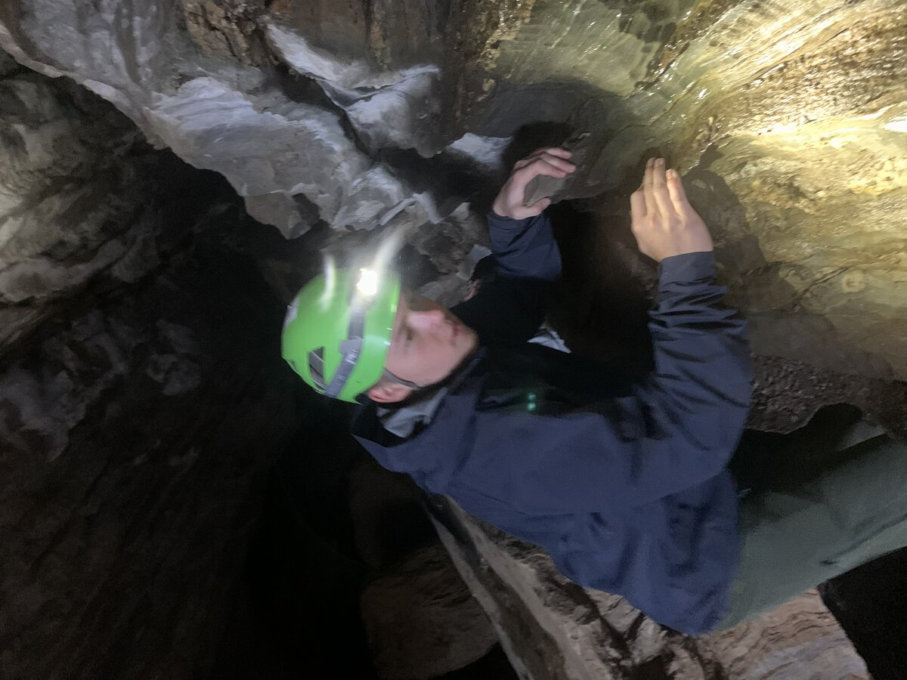
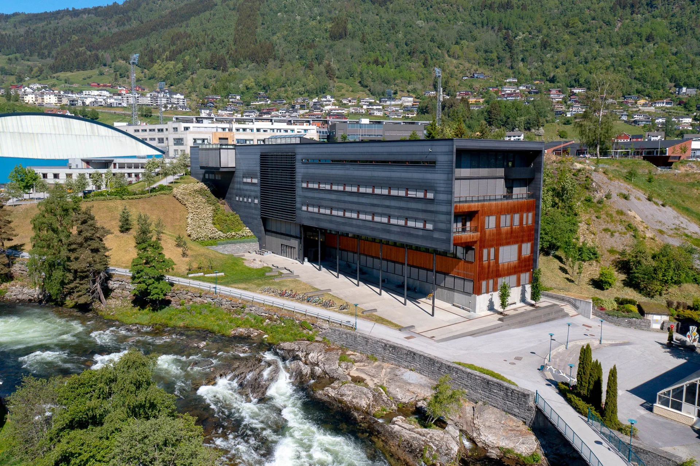

geolog
Vetle Øyvind Larsen Lunde
Bergvæg, brist med drøn og brag
for mit tunge hammerslag!
Nedad må jeg vejen bryde,
til jeg hører malmen lyde.
– Henrik Ibsen
Om meg
Hei, mitt navn er Vetle! Jeg er 23 år og kommer fra Stavanger.
Siden barndommen har jeg hatt en stor interesse for geologi. Ønsket om å forstå hvorfor landskapet ser ut slik som det gjør, har vært en viktig drivkraft i min interesse for faget.
I 2023 startet jeg på den treårige bachelorgraden Geologi og Geofare ved Høgskulen på Vestlandet i Sogndal. Studiet har gitt meg stor kunnskap og lærerike opplevelser gjennom både teoretisk undervisning og feltarbeid/ekskursjoner. Nå bygger jeg videre på kunnskapen jeg har opparbeidet meg ved å skrive en bacheloroppgave som avslutning på studiet.



Bakgrunn
Faglig bakgrunn
Jeg studerer Geologi og geofare, Norges fremste bachelorprogram innen geofag, som i både 2022 og 2023 ble kåret til landets beste i Studiebarometeret. Studiet utmerker seg med sitt unike fokus på geofare og arealplanlegging, og som student her drar jeg nytte av et læringsmiljø i norgestoppen med tett oppfølging fra fagmiljøet. Med min bakgrunn fra dette studiet har jeg opparbeidet meg solid kompetanse på å løse komplekse geologiske problemstillinger i praksis.
Oppnådd faglig kompetanse
| Emnekode | Emnenavn | Studiepoeng |
|---|---|---|
| Semester 1 | ||
| MA414 | Matematikk for naturfag | 10 sp |
| GE406 | Geologi grunnkurs | 10 sp |
| GE413 | Kartlære og GIS | 10 sp |
| Semester 2 | ||
| FY400 | Innføring i fysikk | 10 sp |
| GE408 | Mineralogi og petrografi | 10 sp |
| GE436 | Sedimentologi | 10 sp |
| Semester 3 | ||
| GE414 | Strukturgeologi og tektonikk | 10 sp |
| GE407 | Anvendt geofysikk | 10 sp |
| GE486 | Glasialgeologi | 10 sp |
| Semester 4 | ||
| GE483 | Climate Change | 10 sp |
| GE484 | Geofare og skredkartlegging | 10 sp |
| GE481 | Ingeniørgeologi, geoteknikk og overvåkning av ustabile fjellsider | 10 sp |
| Semester 5 | ||
| GE482 | Hydrogeologi | 10 sp |
| ING202 | Programmering for ingeniører | 5 sp |
| ME420 | Statistikk | 10 sp |
| Semester 6 | ||
| GE448 | Snø og snøskred | 10 sp |
| ING301 | Datateknologi og videregående programmering for ingeniører | 5 sp |
| GE491 | Bacheloroppgave i geologi | 20 sp |
Jobberfaring
Vaktsoldat – Akershus Festning
Tjenestegjorde som vaktsoldat ved Akershus festning i Oslo. Her jobbet vi med å ivareta sikkerhet gjennom døgnkontinuerlig vakthold. Hovedoppgavene inkluderer portvakt, streifvakter (patruljering) og flaggpost, samt bistand ved arrangementer. Tjenesten innebar tett kontakt med sivile på en av Oslo's største turistattraksjoner.
Renovasjonen IKS
Som en sommerjobb i coronatiden jobbet jeg med avfallshåndtering, både husholdning, elektronisk og annet diverse. Jobben startet tidlig og innebar mye fysisk arbeid, samt samhandling med kollegaer.
